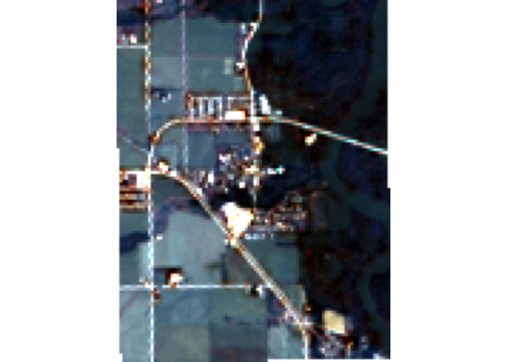
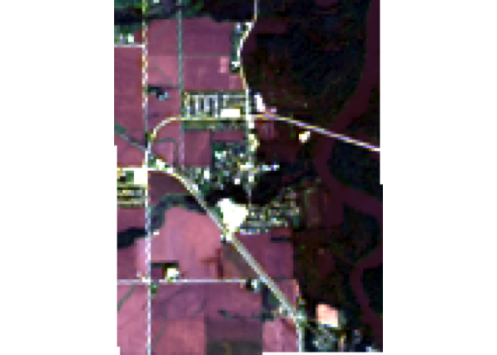
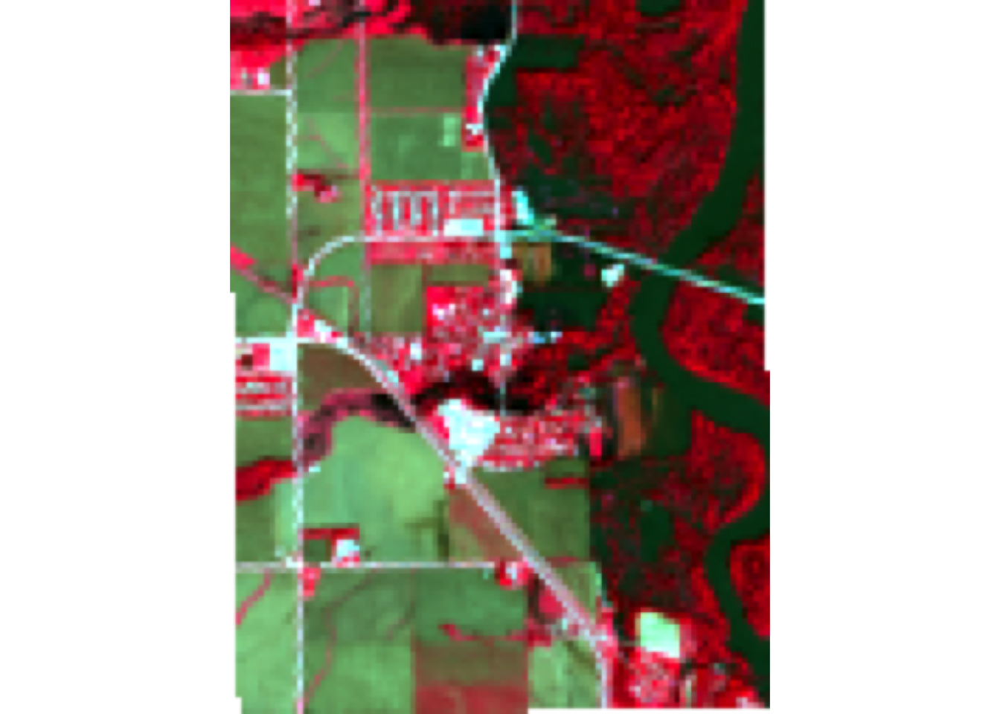
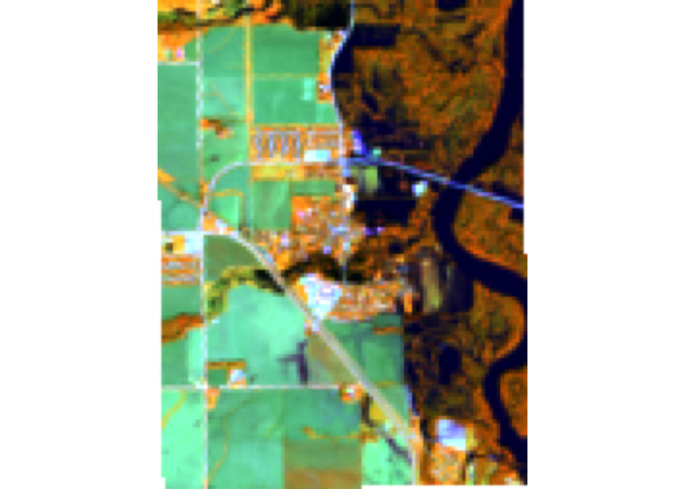
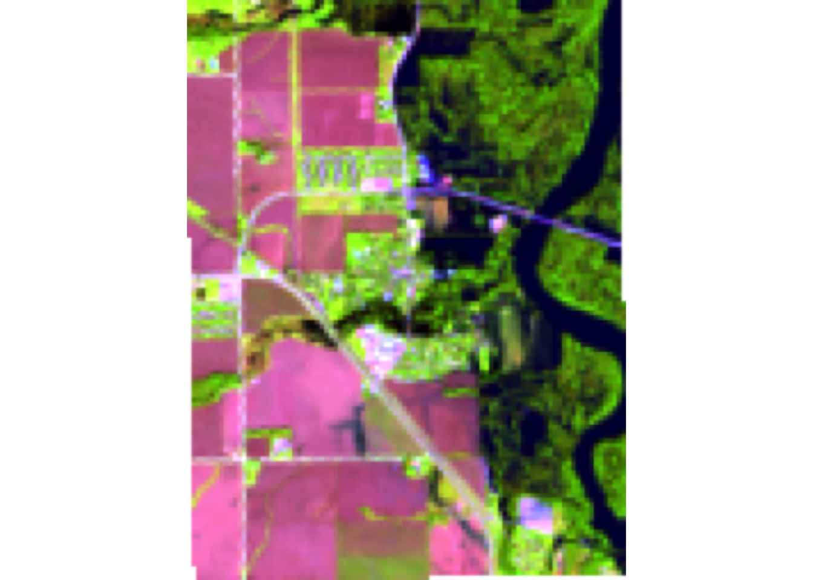
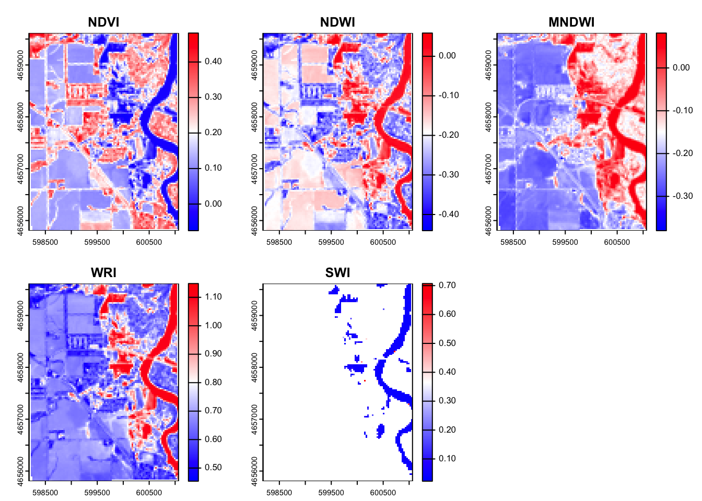
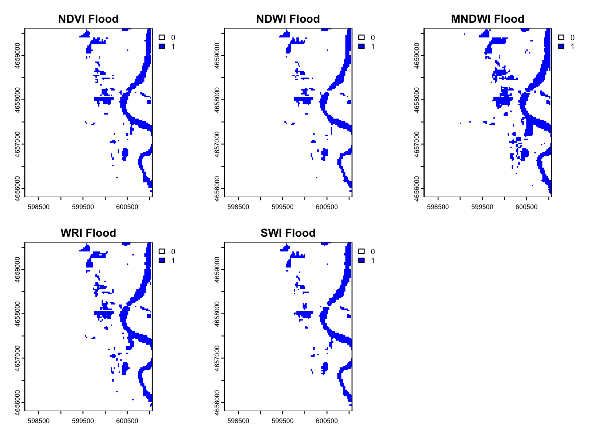
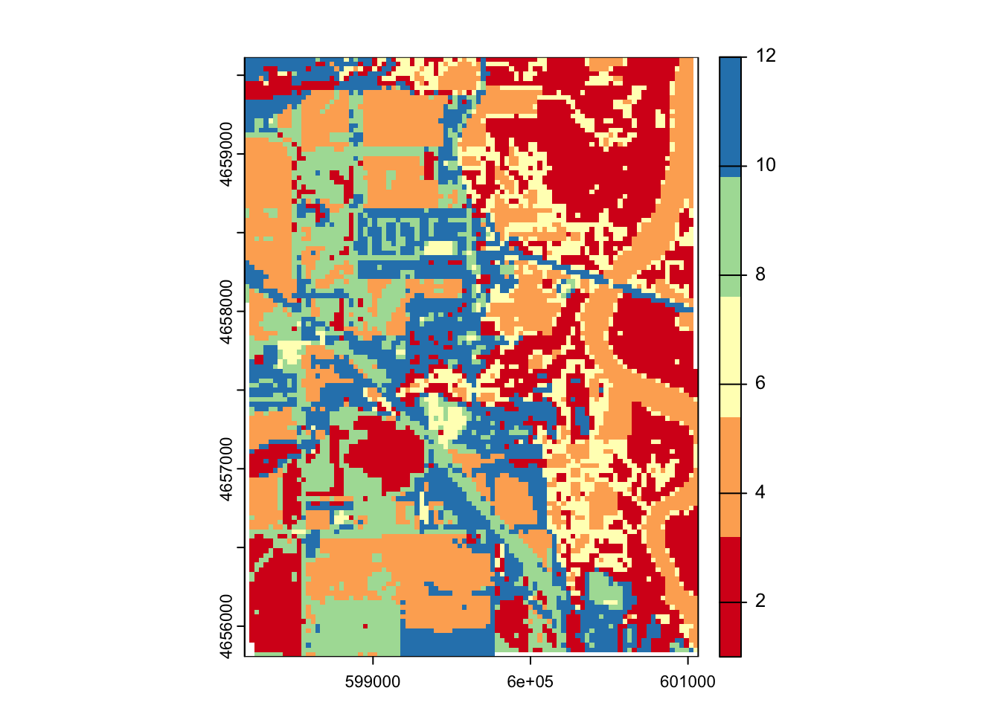
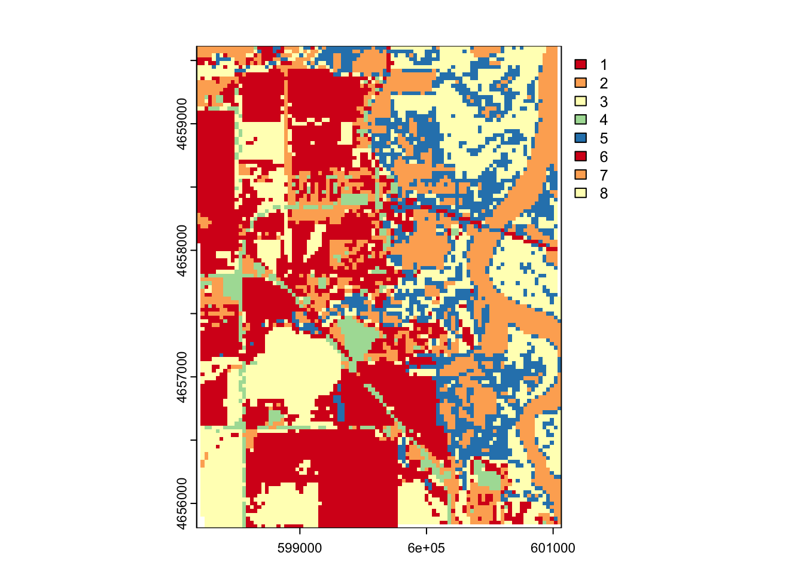
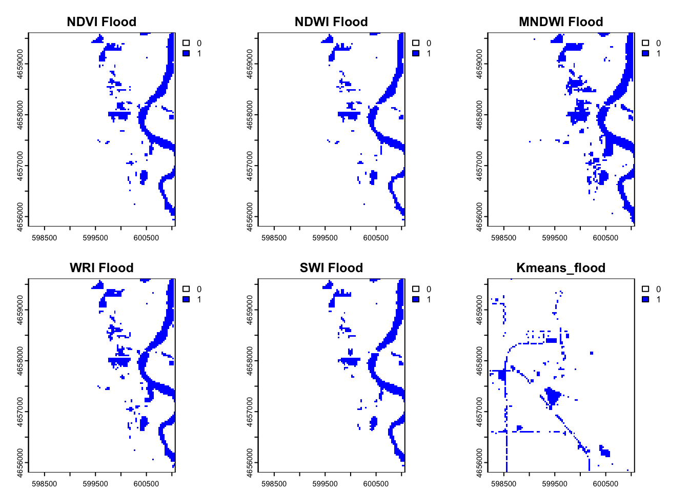

# Load in package
library(rstac)
library(terra)
library(sf)
library(mapview)
library(tidyverse)Lab04: Flood Mapping
Ecosystem Science and Sustanability 523c
Palo Iowa Flooding
Step 1: AOI identification
palo <- AOI::geocode("Palo, Iowa", bbox = TRUE)Step 2: Temporal Identification
temporal_range <- "2016-09-24/2016-09-29"Step 3: Identifying the Relevant Images
# Open a connection to the MPC STAC API
(stac_query <- stac("https://planetarycomputer.microsoft.com/api/stac/v1"))###rstac_query
- url: https://planetarycomputer.microsoft.com/api/stac/v1/
- params:
- field(s): version, base_url, endpoint, params, verb, encode(stac_query <- stac("https://planetarycomputer.microsoft.com/api/stac/v1") %>%
stac_search(
collections = "landsat-c2-l2") %>%
get_request())###Items
- features (250 item(s)):
- LC09_L2SR_094032_20250423_02_T2
- LC09_L2SP_094022_20250423_02_T2
- LC09_L2SP_094018_20250423_02_T2
- LC09_L2SP_094017_20250423_02_T1
- LC09_L2SP_094016_20250423_02_T1
- LC09_L2SP_094015_20250423_02_T2
- LC09_L2SP_094014_20250423_02_T2
- LC09_L2SP_094013_20250423_02_T1
- LC09_L2SP_094012_20250423_02_T1
- LC09_L2SP_094011_20250423_02_T1
- ... with 240 more feature(s).
- assets:
ang, atran, blue, cdist, coastal, drad, emis, emsd, green, lwir11, mtl.json, mtl.txt, mtl.xml, nir08, qa, qa_aerosol, qa_pixel, qa_radsat, red, rendered_preview, swir16, swir22, tilejson, trad, urad
- item's fields:
assets, bbox, collection, geometry, id, links, properties, stac_extensions, stac_version, type(stac_query <- stac("https://planetarycomputer.microsoft.com/api/stac/v1") %>%
stac_search(
collections = "landsat-c2-l2",
datetime = temporal_range,
bbox = st_bbox(palo)) %>%
get_request())###Items
- features (2 item(s)):
- LC08_L2SP_025031_20160926_02_T1
- LE07_L2SP_026031_20160925_02_T1
- assets:
ang, atmos_opacity, atran, blue, cdist, cloud_qa, coastal, drad, emis, emsd, green, lwir, lwir11, mtl.json, mtl.txt, mtl.xml, nir08, qa, qa_aerosol, qa_pixel, qa_radsat, red, rendered_preview, swir16, swir22, tilejson, trad, urad
- item's fields:
assets, bbox, collection, geometry, id, links, properties, stac_extensions, stac_version, type(stac_query <- stac("https://planetarycomputer.microsoft.com/api/stac/v1") %>%
stac_search(
collections = "landsat-c2-l2",
datetime = temporal_range,
bbox = st_bbox(palo),
limit = 1) %>%
get_request())###Items
- features (1 item(s)):
- LC08_L2SP_025031_20160926_02_T1
- assets:
ang, atran, blue, cdist, coastal, drad, emis, emsd, green, lwir11, mtl.json, mtl.txt, mtl.xml, nir08, qa, qa_aerosol, qa_pixel, qa_radsat, red, rendered_preview, swir16, swir22, tilejson, trad, urad
- item's fields:
assets, bbox, collection, geometry, id, links, properties, stac_extensions, stac_version, type(stac_query <- stac("https://planetarycomputer.microsoft.com/api/stac/v1") |>
stac_search(
collections = "landsat-c2-l2",
datetime = temporal_range,
bbox = st_bbox(palo),
limit = 1) |>
get_request() |>
items_sign(sign_planetary_computer()))###Items
- features (1 item(s)):
- LC08_L2SP_025031_20160926_02_T1
- assets:
ang, atran, blue, cdist, coastal, drad, emis, emsd, green, lwir11, mtl.json, mtl.txt, mtl.xml, nir08, qa, qa_aerosol, qa_pixel, qa_radsat, red, rendered_preview, swir16, swir22, tilejson, trad, urad
- item's fields:
assets, bbox, collection, geometry, id, links, properties, stac_extensions, stac_version, typeStep 4: Downloading needed images
# knitr::include_graphics("images/lsat8-bands.jpg")
# Bands 1-6
bands <- c('coastal', 'blue','green', 'red', 'nir08', 'swir16')
# Download the data
assets_download(items = stac_query,
asset_names = bands,
output_dir = 'data',
overwrite = TRUE)###Items
- features (1 item(s)):
- LC08_L2SP_025031_20160926_02_T1
- assets: blue, coastal, green, nir08, red, swir16
- item's fields:
assets, bbox, collection, geometry, id, links, properties, stac_extensions, stac_version, typeQuestion 1 : Data Access
Step 5: Analyze the images
# Load in landsat_stack
landsat_folder <- "~/Desktop/Grad School Things/Spring Classes/523c/gitHub_523c/data/landsat-c2/level-2/standard/oli-tirs/2016/025/031/LC08_L2SP_025031_20160926_20200906_02_T1"
tif_files <- list.files(landsat_folder, pattern = "_SR_B[1-6]\\.TIF$", full.names = TRUE)
landsat_stack <- rast(tif_files)
names(landsat_stack) <- bands
# Transform AOI to the CRS of landsat stack
palo_2 <- st_transform(palo, crs(landsat_stack))
# Convert to terra
palo_3 <- vect(palo_2)
# Crop & Mask
landsat_crop <- crop(landsat_stack, palo_3)
landsat_crop <- mask(landsat_crop, palo_3)
# Plot
## True Color
plotRGB(landsat_crop, r=3, g=2, b =1,
stretch = "lin",
main = "True Color RGB Composite")
# False Color
plotRGB(landsat_crop, r = 4, g = 3, b = 2,
stretch = "lin",
main = "Flase Color RGB Composite")
Question 2: Data Visualization
# R-G-B (natural color)
plotRGB(landsat_crop, r = 4, g = 3, b = 2,
stretch = "lin",
main = "Natural Color")# NIR-R-G (color infared)
plotRGB(landsat_crop, r = 5, g = 4, b = 3,
stretch = "lin",
main = "Color Infared")
# NIR-SWIR1-r (false color water focus)
plotRGB(landsat_crop, r = 5, g = 6, b = 4,
stretch = "lin",
main = "False Color Water Focus")
# Your Choice - Fire (SWIR1-NIR-G)
plotRGB(landsat_crop, r = 6, g = 5, b = 4,
stretch = "lin",
main = "Custom: Fire")
What does each image allow you to see?
The natural color image allows you to see what the human eye can see. Vegetation appears green, this is best for general visualization. Color infrared best shows healthy vegetation. The areas with bright red have the healthiest green vegetation production. The false color water focus is showing what areas on our image are wetter than others. The blue river and darker colors indicate wetter areas and these areas are absorbing more near infrared. Finally the custom option that I chose to do isn’t supper applicable here but in other watershed can be. I chose to do burn area detection. UnBurned vegetation will appear to be pink or green while the burned areas will appear to be dark brown or black.
Question 3: Indices and Thresholds
Step 1: Raster Algebra
create 5 new rasters using indices
# Define colors
green <- landsat_crop[[3]]
red <- landsat_crop[[4]]
blue <- landsat_crop[[2]]
NIR <- landsat_crop[[5]]
SWIR <- landsat_crop[[6]]
# NDVI - Normalized Difference Vegetation Index
NDVI <- (NIR - red) / (NIR + red)
# NDWI - Normalized Difference Water Index
NDWI <- (green - NIR) / (green + NIR)
# MNDWI - Modified Normalized Difference Water Index
MNDWI <- (green - SWIR) / (green + SWIR)
# WRI - Water Ratio Index
WRI <- (green + red) / (NIR + SWIR)
# SWI - Simple Water Index
SWI <- (1) / (sqrt(blue - SWIR))
# Combine the rasters
index_stack <- c(NDVI, NDWI, MNDWI, WRI, SWI)
names(index_stack) <- c("NDVI", "NDWI", "MNDWI", "WRI", "SWI")
# Create palette
palette <- colorRampPalette(c("blue", "white", "red"))(256)
# Plot
plot(index_stack, col = palette)
When looking at the 5 different index’s that we created we can see that in the NDVI the vegetation index we can see that the areas in red have the highest chance of being healthy vegetation. This makes sense as it seems to follow the river edge. We can see in the NDWI the high values (red/white) are the locations where we would expect to see water. The river in this image is clearly highlighted red meaning this also worked. The modified NDWI improves the past index a bit in a urban setting. This uses SWIR instead of NIR and this helps account for the urban structures. The WRI looks at the general wetness in an area. There are sections in the floodplain and in the river that are clearly wetter than the other areas. Finally the SWI helps you see the open water from everything that is dry.
Step 2: Raster Thresholding
# Define the thresholds for flooding
# NDVI (flood = NDVI < 0)
ndvi_flooded <- app(NDVI, fun = function(x) ifelse(x < 0, 1, 0))
# NDWI (flood = NDWI > 0)
ndwi_flooded <- app(NDWI, fun = function(x) ifelse(x > 0, 1, 0))
# MNDWI (Flood = MNDWI > 0 )
mndwi_flooded <- app(MNDWI, fun = function(x) ifelse(x > 0, 1, 0))
# WRI (flood = WRI > 1)
wri_flooded <- app(WRI, fun = function(x) ifelse(x > 1, 1, 0))
# SWI (flood = SWI < 5)
swi_flooded <- app(SWI, fun = function(x) ifelse(x < 0.2, 1, 0))
# Combine
flood_stack <- c(ndvi_flooded, ndwi_flooded, mndwi_flooded, wri_flooded, swi_flooded)
names(flood_stack) <- c("NDVI Flood", "NDWI Flood", "MNDWI Flood", "WRI Flood", "SWI Flood")
# Set NA to zero
flood_stack <- app(flood_stack, fun = function(x) ifelse(is.na(x), 0, x))
# Plot
plot(flood_stack, col = c("white", "blue"))
Step 3: Describe
After plotting all of the thresholds for flooding based on the different index’s we can see that there are some with different results than others. We can see that the MNDWI index resulted in a greater area that was flooded. This may be better in this situation because we do have a good amount of urban influence. The WRI seems to be a little underestimated because this is less focused on water detection but more on moisture levels.
Question 4: Supervised or unserpervised classification
Step 1: Set.seed()
# Produce a consistent/reproducible result from a random process
set.seed(123)Step 2: values () & dim()
# Extract the values from raster stack
values <- values(landsat_crop)
# Check the dimensions of the extracted values
dim(values)[1] 12192 6The dimensions of the extracted values tell you that from each of the 6 layers we have gotten 12,192 values.
# Remove the NA values
values <- na.omit(values)Step 3: kmeans clustering algorithm
kmeans <- kmeans(values, centers = 12, iter.max = 100)
kmeans_2 <- kmeans(values, centers = 8, iter.max = 100)Step 4:
clust_rast <- landsat_crop$blue
values(clust_rast) <- NA
# try 2
clust_rast_2 <- landsat_crop$nir08
values(clust_rast_2) <- NA# Assign Values
clust_rast[blue] <- kmeans$cluster
clust_rast_2[NIR] <- kmeans_2$cluster# Plot
plot(clust_rast, col = RColorBrewer::brewer.pal(5, "Spectral"))
# Plot 2
plot(clust_rast_2, col = RColorBrewer::brewer.pal(5, "Spectral"))
Step 5: flood water
# Generate table
flood_table <- table(values(ndwi_flooded), values(clust_rast))
# whichmax()
flood_cluster <- which.max(flood_table[2,])
# Combine to identify cluster
flood_kmeans <- app(clust_rast_2, fun = function(x) ifelse(x == flood_cluster, 1 , 0))
# Combine
flood_combine_stack <- c(flood_stack, flood_kmeans)
names(flood_combine_stack) <- c(names(flood_stack), "Kmeans_flood")
# plot
plot(flood_combine_stack, col = c("white", "blue"))
Question 5: Compare
# Sum flood counts
flood_cell_counts <- global(flood_combine_stack, sum, na.rm=TRUE)
# Calculate area
pixel_area_m2 <- prod(res(flood_combine_stack))
flood_area_m2 <- flood_cell_counts * pixel_area_m2
flood_area_km2 <- flood_area_m2/1e6
flood_area_km2 sum
NDVI Flood 0.8208
NDWI Flood 0.7182
MNDWI Flood 1.1736
WRI Flood 0.9387
SWI Flood 0.7497
Kmeans_flood 0.4788summarize agreement
flood_agreement <- app(flood_combine_stack, fun = sum, na.rm =TRUE)
mapview(flood_agreement, col.regions= blues9)Plot with Mapview
# Replace 0s with NA
flood_agreement_na <- classify(flood_agreement, rcl = matrix(c(0, NA), ncol = 2, byrow = TRUE))
# View in interactive map
library(mapview)
mapview(flood_agreement_na, col.regions = blues9)THe removal of 0 with NA values caused the pixels to average through the missing values this iteration between two pixels resulted in the non even values.
Extra Credit
Use a slippy map to find an place in Palo,Iowa
mapview(palo_3)flood_lat <- 42.06347
flood_lon <- -91.78925
flood_site <- st_point(c(flood_lon, flood_lat))
flood_site <- st_sfc(flood_site, crs = crs(flood_combine_stack))
flood_site <- st_transform(flood_site, crs = crs(flood_combine_stack))
flood_site_vec <- vect(flood_site)
flood_values <- terra::extract(flood_combine_stack, flood_site_vec)
flood_values ID NDVI Flood NDWI Flood MNDWI Flood WRI Flood SWI Flood Kmeans_flood
1 1 NA NA NA NA NA NAAttempt 2
mapview(palo_3)flood_lat_2 <- 42.06745
flood_lon_2 <- -91.79163
flood_site_2 <- st_point(c(flood_lon_2, flood_lat_2))
flood_site_2 <- st_sfc(flood_site_2, crs = crs(flood_combine_stack))
flood_site_2 <- st_transform(flood_site_2, crs = crs(flood_combine_stack))
flood_site_vec_2 <- vect(flood_site_2)
flood_values_2 <- terra::extract(flood_combine_stack, flood_site_vec_2)
flood_values_2 ID NDVI Flood NDWI Flood MNDWI Flood WRI Flood SWI Flood Kmeans_flood
1 1 NA NA NA NA NA NA